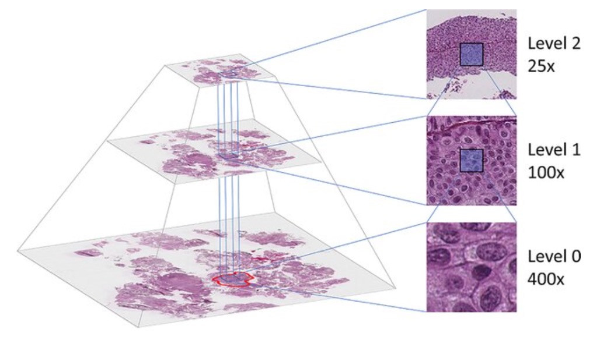

Day 3, session 4: Practical introduction to QuPath#
Lab author: Shatavisha Dasgupta .
(Adapted from QuPath documentation and Pete Bankhead’s video tutorial)
Learning Objectives#
Create a QuPath project
View pyramidal files in QuPath
Annotate regions of interest
Detect cells in the regions of interest
Perform and export measurements on detected cells
Lab Data in this folder (Originally sourced from here and here
1. Background information#
1.1 What is QuPath?#
QuPath is open source software for bioimage analysis created and maintained by Peter Bankhead and his team at The University of Edinburgh. QuPath is commonly used for digital pathology in research because it offers a powerful set of tools for working with whole slide images - but it can be applied to lots of other kinds of image as well.
Read the original publication introducing QuPath!
1.2 What are pyrmidal file formats?#
Whole slide images (WSIs) are a crucial part of translational research projects, because they allow studying changes in individual tissue structure in health or disease the context of the parent organ
WSIs are often > 10GB and contain billions of pixels, and are commonly stored in a pyramidal file format
A pyramidal file format stores images at multiple resolutions in a single file, organized in a pyramid-like hierarchy(highest resolution at the base, progressively lower resolutions above).
This optimizes performance for viewing, processing, and analyzing large images without needing to load the entire high-res image into memory.
Common Use Cases: Digital pathology (e.g., .svs, .scn, .ndpi, .tiff) Spatial Biology (e.g. .tiff) Geospatial imaging (e.g., GeoTIFF)
In histology images, zooming in (looking under higher magnification) allows examining the finer details in the cell / tissue structures
Structure of pyramidal images (as shown in the figure):
Level 0: Full-resolution image
Higher levels : Downsampled versions (e.g., 1/2, 1/4, 1/8 scale)
Advantages of pyramidal file format:
Faster loading and rendering of large images
Reduced memory footprint when viewing subsets or low-resolution previews
Facilitates region-of-interest (ROI) extraction without full image decoding
Common pyramidal file formats:
TIFF with pyramid tags (.tiff/.ome.tiff)
SVS (Aperio), NDPI (Hamamatsu), SCN (Leica), etc
Reading Tools:
OpenSlide, Bio-Formats, pyvips, tifffile, QuPath, and others
Limitations: Larger file sizes due to storage of multiple resolutions Requires specialized software for reading/writing
{kind=link}
2. Exercise steps#
2.1 Launch QuPath#
The welcome screen links to QuPath documentation, forum.image.sc, and the source code

2.2 Create a QuPath project#
Although it is possible to view and work with single images in QuPath, creating a “Project” makes saving and reloading data associated with multiple images much more efficient. A QuPath project groups related images to easily switch between them via thumbnails and also organizes associated data files, scripts, and classifiers.
A. Create a new / choose a project folder#
The project folder can be any folder, stored anywhere on your computer, but it must be empty. This can be done by doing either of the following:
Through
File --> Project... --> Create new project

This is how a QuPath project folder can look like:

Dragging and dropping the folder into QuPath
B. Add images to your project#
You can add images via File --> Project... --> Add images, or, you can drag and drop the images into QuPath. This will open a dialog box, where you can set parameters related to the image being imported.

2.3 View image properties#
Click the Image tab to get a table of properties related to your image.

The scroll wheel of your mouse (or equivalent scrolling motion on a trackpad) can be used to zoom in and out of an image within QuPath.
You can visualize the different stains in your image individually by clicking View --> Brightness and Contrast and choose the specific stains / channels to view

2.4 Annotate regions of interest#
Annotation objects can be created by drawing specific shapes on the image, using rectangle / circle / polygon tools. One can also use the brush tools to draw custom shapes. This can be done by selecting the tool, clicking on the image, and dragging the mouse. Creating annotation objects allows us to define regions within which we can perform detections. Right-clicking on an annotation “locks” it, and prevents it from getting accidentally deleted. One can make annotations of different classes in QuPath and information regarding the class to which the annotation belongs can be entered by right clicking on the annotated area, and then clicking on Set Classification.


2.5 View annotation measurements#
Within the Analysis panel, below the annotation list you should see a table showing measurements for the currently selected object. This updates automatically if another annotation is selected. Alternatively, you can click on Measure --> Show annotation measurements, and a table will pop-up showing the annotation measurements.

2.6 Detect cells#
For this step, we will use the OS-2.ndpi image.
We will first open the image and annoate a region of interest.
Next, we will try to detect all the cells in the annotated area, and also obtain a count of cells that are positive for DAB-staining.
We will click on Analyze --> Cell detection --> Positive Cell detection.

This opens up a window where we can set the parameters that will allow for accurate cell detection. Once the appropriate parameters are set, we can hit Run, and the cells will be detected.

The Annotations pane will show the count of all cells, positive cells and negative cells that were detected.

We can also visualize the detections as a heatmap overlaid on the image by clicking Measure --> Show measurement maps

2.7 Classify cells#
We can next assign the positive cells that were detected to specific areas in the tissue, e.g. tumor or stroma. This can help us compare the counts or other characteristics of the positive cells in the tumoral or the stromal regions.
For this, we first annotate some regions within our region of interest as ‘tumor’ or ‘stroma’, and train the classifier Classify --> Object classification --> Train object classifier

We will now get the measurement of the positive cells stratified into the classes (tumor/stroma) that we set.

2.8 Perform and export measurements#
QuPath makes some basic measuerements of the annotations and detections by default if no additional instruction is provided. However, more granular or more advanced measurements can also be made by clicking on Analyze --> Calculate features and then selecting the features that you would want to extract.

These measurements can also be viewed as a heatmap overlaid on the image by clicking Measure --> Show measurement maps or as a table by clicking Measure --> Show detection measurements


Finally, we export the measurements, by clicking Measure --> Export measurements and selecting the measurements we want to export (e.g. measurements for all images / some images, annotation measurements, detection measurements) and also the file format in which we would want the measurements saved (e.g. .csv, .tsv)

You will see the file with the measurements saved in your QuPath project folder.